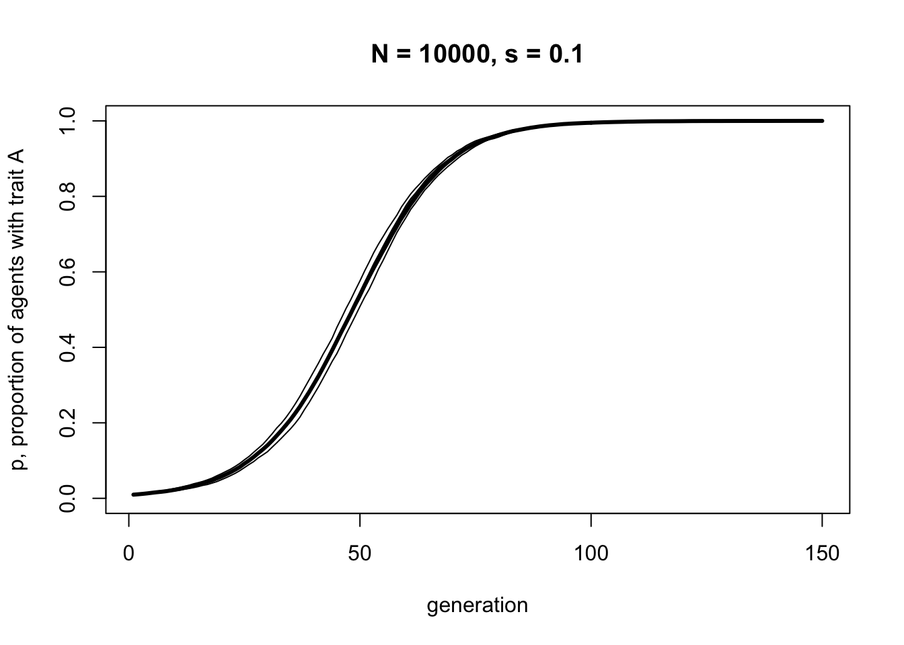
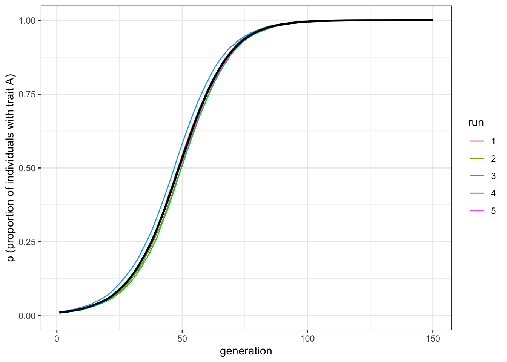

3 Biased transmission (direct/content bias)
So far we have looked at unbiased transmission (Model 1) and unbiased/biased mutation (Model 2). Let’s complete the set by looking at biased transmission. This occurs when one trait or one demonstrator is more likely to be copied than another trait or demonstrator. Trait-based copying is often called ‘direct’ or ‘content’ bias, while demonstrator-based copying is often called ‘indirect’ or ‘context’ bias. Both are sometimes also called ‘cultural selection’ because one thing (trait or demonstrator) is selected to be copied over another. In Model 3 we’ll look at trait-based (direct, content) bias.
(As an aside, there is a confusing array of terminology in the field of cultural evolution, as illustrated by the preceding paragraph. That’s why models are so useful. Words and verbal descriptions can be ambiguous. Often the writer doesn’t realise that there are hidden assumptions or unrecognised ambiguities in their descriptions. They may not realise that what they mean by ‘cultural selection’ is entirely different to how someone else uses it. Models are great because they force us to precisely specify exactly what we mean by a particular term or process. I can use the words in the paragraph above to describe biased transmission, but it’s only really clear when I model it, making all my assumptions explicit.)
As in Models 1 and 2, we assume there are two traits \(A\) and \(B\). Let’s assume that biased transmission favours trait \(A\). Perhaps \(A\) is a more effective tool, more memorable story, or more easily pronounced word. We’re not including any mutation in the model, so we need to include some \(A\)s at the beginning of the simulation (otherwise it would never appear), but let’s make it initially rare. Then we can see how selection favours this initially-rare trait.
To simulate biased transmission, following Model 1, we assume that each agent chooses another agent from the previous generation at random. But this time, if that chosen agent possesses trait \(A\), then the focal agent copies trait \(A\) with probability \(s\). This parameter \(s\) gives the strength of biased transmission, or the probability that an agent encountering another agent with a more favourable trait than their current trait abandons their current trait and adopts the new trait. If \(s = 0\), there is no selection and agents never switch as a result of biased transmission. If \(s = 1\), then agents always switch when encountering a favoured alternative.
Below is a function BiasedTransmission that implements all of these processes.
BiasedTransmission <- function (N, s, p_0, t_max, r_max) {
output <- as.data.frame(matrix(NA, t_max, r_max)) # create a matrix with t_max rows and r_max columns, filled with NAs, then convert to data.frame
names(output) <- paste("run", 1:r_max, sep="") # purely cosmetic: rename the columns with run1, run2 etc.
for (r in 1:r_max) {
agent <- data.frame(trait = sample(c("A","B"), N, replace = TRUE, prob = c(p_0,1-p_0)), stringsAsFactors = FALSE) # create first generation
output[1,r] <- sum(agent$trait == "A") / N # add first generation's p to first row of column r
for (t in 2:t_max) {
# biased transmission
previous_agent <- agent # copy agent to previous_agent dataframe
demonstrator_trait <- sample(previous_agent$trait, N, replace = TRUE) # for each agent, pick a random agent from the previous generation to act as demonstrator and store their trait
copy <- runif(N) # get N random numbers each between 0 and 1
agent$trait[demonstrator_trait == "A" & copy < s] <- "A" # if demonstrator has A and with probability s, copy A from demonstrator
output[t,r] <- sum(agent$trait == "A") / N # get p and put it into output slot for this generation t and run r
}
}
# first plot a thick line for the mean p
plot(rowMeans(output), type = 'l', ylab = "p, proportion of agents with trait A", xlab = "generation", ylim = c(0,1), lwd = 3, main = paste("N = ", N, ", s = ", s, sep = ""))
for (r in 1:r_max) {
lines(output[,r], type = 'l') # add lines for each run, up to r_max
}
output # export data from function
}Most of BiasedTransmission is recycled from Models 1 and 2. As before, we set up a dataframe to hold the output from multiple runs, and in generation \(t = 1\) create a dataframe to hold the trait of each agent. The plot function is also similar, but now we add \(s\) to the plot title so we don’t forget it.
The major change is that we now include biased transmission from the second generation onwards. Using vectorised code, we pick for each of \(N\) agents one of the previous generation’s agents at random and store their trait in demonstrator_trait. Then we get random numbers between 0 and 1 for each agent and store these in copy. If the demonstrator has trait \(A\) (demonstrator_trait == “A”), and with probability \(s\) (copy < s), then the agent adopts trait \(A\).
Let’s run our BiasedTransmission model. Remember we are starting with a population with a small number of \(A\)s, so \(p_0 = 0.01\).
data_model3 <- BiasedTransmission(N = 10000, s = 0.1, p_0 = 0.01, t_max = 150, r_max = 5)
With a moderate selection strength (\(s = 0.1\)), we can see that \(A\) gradually replaces \(B\) and goes to fixation. It does this in a characteristic manner: the increase is slow at first, then picks up speed, then plateaus.
Note the difference to biased mutation. Where biased mutation was r-shaped, with a steep initial increase, biased transmission is s-shaped, with an initial slow uptake. This is because the strength of biased transmission (like selection in general) is proportional to the variation in the population. When \(A\) is rare initially, there is only a small chance of picking another agent with \(A\). As \(A\) spreads, the chances of picking an \(A\) agent increases. As \(A\) becomes very common, there are few \(B\) agents left to switch.
Let’s double the selection strength, to \(s = 0.2\), below.
data_model3 <- BiasedTransmission(N = 10000, s = 0.2, p_0 = 0.01, t_max = 150, r_max = 5)
As we might expect, increasing the strength of selection increases the speed with which \(A\) goes to fixation. Note, though, that it retains the s-shape.
3.1 Summary of the model
In Model 3 we saw how biased transmission causes a trait favoured by the selection bias to spread and go to fixation in a population, even when it is initially very rare. Biased transmission differs in its dynamics from biased mutation. Its action is proportional to the variation in the population at the time at which it acts. It is strongest when there is lots of variation (in our model, when there are equal numbers of \(A\) and \(B\) at \(p = 0.5\)), and weakest when there is little variation (when \(p\) is close to 0 or 1).
3.2 Analytical appendix
As before, we have \(p\) agents with trait \(A\), and \(1 - p\) agents with trait \(B\). The \(p\) agents with trait \(A\) keep their \(A\)s, because \(A\) is favoured by biased transmission. The \(1 - p\) agents with trait \(B\) pick another agent at random, hence with probability \(p\), and with probability \(s\) they switch to trait \(A\). We can therefore write the recursion for \(p\) under biased transmission as:
\[p' = p + p(1-p)s \hspace{30 mm}(3.1)\]
The first term on the right-hand side is the unchanged \(A\) bearers, and the second term is the \(1-p\) \(B\)-bearers who find one of the \(p\) \(A\)-bearers and switch with probability \(s\).
Here is some code to plot this biased transmission recursion:
p <- rep(0, 150)
p[1] <- 0.01
s <- 0.1
for (i in 2:150) {
p[i] <- p[i-1] + p[i-1]*(1-p[i-1])*s
}
plot(p, type = 'l', ylab = "p, proportion of agents with trait A", xlab = "generation", ylim = c(0,1), lwd = 3, main = paste("s = ", s, sep = ""))
The curve above should be identical to the simulation curve, given that the simulation had the same biased transmission strength \(s\) and a large enough \(N\) to minimise stochasticity.
From the equation above, we can see how the strength of biased transmission depends on variation in the population, given that \(p (1 - p)\) is the formula for variation. This determines the shape of the curve, while \(s\) determines the speed with which the equilibrium \(p^*\) is reached.
But what is the equilibrium \(p^*\) here? In fact there are two. As before, the equilibrium can be found by setting the change in \(p\) to zero, or when:
\[p(1-p)s = 0 \hspace{30 mm}(3.2)\]
There are three ways in which the left-hand side can equal zero: when \(p = 0\), when \(p = 1\) and when \(s = 0\). The last case is uninteresting: it would mean that biased transmission is not occurring. The first two cases simply say that if either trait reaches fixation, then it will stay at fixation. This is to be expected, given that we have no mutation in our model. It contrasts with unbiased and biased mutation, where there is only one equlibrium value of \(p\).
We can also say that \(p = 0\) is an unstable equilibrium, meaning that any slight perturbation away from \(p = 0\) moves \(p\) away from that value. This is essentially what we simulated above: a slight perturbation up to \(p = 0.01\) went all the way up to \(p = 1\). In contrast, \(p = 1\) is a stable equilibrium: any slight perturbation from \(p = 1\) immediately goes back to \(p = 1\).